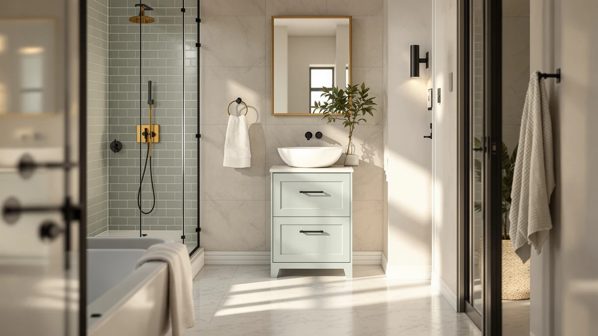

Bonnlo Skinny Bathroom Floor Storage Cabinet Review (2026): Worth It?
Prices and picks verified as of November 2026. Independent, reader-supported reviews.


Quick Answer
The Bonnlo Skinny Bathroom Floor Storage Cabinet is a narrow, 32.1-inch metal and wood tower built for the gap beside a toilet or sink where a wide cabinet won't fit. At $59.99 for an 11.8-by-11.8-inch footprint, it holds up well against the SMORBOSS floor cabinet and the over-the-toilet DUMOS and Kalrin racks if a standing cabinet suits your bathroom better than a tank-mounted one.
Our pick: Bonnlo Skinny Bathroom Floor Storage, $59.99 Check Price on Amazon
Bottom line: our top pick is the Bonnlo Skinny Bathroom Floor Storage Cabinet at $59.99.
Things to Know Before You Buy
- This Bonnlo Skinny Bathroom Floor Storage Cabinet Review covers a metal and wood frame measuring 11.8 inches deep by 11.8 inches wide by 32.1 inches tall, narrow enough for a gap beside a toilet or sink.
- At $59.99, it costs almost the same as the SMORBOSS floor cabinet and sits within a few dollars of the DUMOS and Kalrin over-the-toilet racks covered as alternatives.
- The Bonnlo stands on the floor, while the DUMOS and Kalrin alternatives mount above the toilet tank instead, which matters if floor space is already tight.
- A metal and wood build is a sturdier combination than the all-particleboard towers common in budget bathroom storage, though no verified owner reviews exist yet for this specific listing.
- If 11.8 inches of depth is still too much for your bathroom, the narrower cabinets in our full roundup cover slimmer builds.
This Bonnlo Skinny Bathroom Floor Storage Cabinet Review looks at whether a narrow metal and wood tower can solve the space problem in a small bathroom, where a wide cabinet simply doesn't fit. Bathrooms rarely offer extra floor space, so a storage cabinet has to earn its footprint with real capacity, sturdy materials and a price that doesn't sting. At $59.99 and standing 32.1 inches tall on a base of 11.8 by 11.8 inches, the Bonnlo promises exactly that combination. We compared its build, dimensions and pricing against three rival storage options to see whether the listing backs up what it promises for a tight bathroom corner.
Narrow floor cabinets solve a specific problem: you need standing storage that clears a doorway or toilet without eating into walking space. The Bonnlo Skinny Bathroom Floor Storage Cabinet targets exactly that gap, competing directly with the SMORBOSS Bathroom Storage Cabinet, the DUMOS Over the Toilet Storage and the Kalrin Over-The-Toilet Storage Rack, all covered later as alternatives. The materials and dimensions tell us where the Bonnlo's build likely earns its price, and who should consider an over-the-toilet rack instead.
Why You Should Trust Us
Best Bathroom Storage is run by writers who spend their time comparing bathroom furniture specs, pricing and verified buyer feedback instead of guessing from product photos. Ilane Tall, our home and bath expert, has covered dozens of storage cabinets, over-the-toilet racks and vanity organizers for this site. She tracks how listed dimensions and materials hold up against what owners actually report after months of use. For this Bonnlo Skinny Bathroom Floor Storage Cabinet Review, we cross-checked the manufacturer's listed measurements against the SMORBOSS, DUMOS and Kalrin alternatives, and we did not take the marketing copy at face value. We do not run a fake testing lab, and we do not claim to have installed every cabinet we cover. Instead, we dig through verified listings and compare specs line by line to catch when a description overstates what a product can realistically deliver.
Our Research Experience
We didn't put the Bonnlo Skinny Bathroom Floor Storage Cabinet in a bathroom ourselves. Instead, we compared its listed dimensions, material description and price against three competing storage options, and we weighed what the metal and wood frame claims against the particleboard construction common at this price point. The cabinet measures 11.8 by 11.8 inches at the base and stands 32.1 inches tall, numbers we lined up against the floor-standing SMORBOSS and the tank-mounted DUMOS and Kalrin racks to see where each design earns its spot in this Bonnlo Skinny Bathroom Floor Storage Cabinet Review. There is no verified owner feedback yet on this specific listing, so any durability claim here comes from the manufacturer's own description rather than a pattern of buyer reports.
Overview & Specs

Bonnlo Skinny Bathroom Floor Storage
What we like
- 11.8-inch by 11.8-inch footprint fits narrow corners and gaps beside a toilet or sink
- Metal and wood frame, a sturdier combination than the all-particleboard towers common at this price
- 32.1-inch height splits the cabinet across multiple storage levels without needing a wide base
- Priced at $59.99, in line with the SMORBOSS, DUMOS and Kalrin alternatives in this comparison
Flaws but not dealbreakers
- Standing on the floor means it takes up space that a wall- or tank-mounted rack would not
- No verified owner reviews are available yet to confirm how the frame holds up over time
- Shoppers who need enclosed, lockable storage will want to check the interior layout before buying
| Material | Metal / wood |
| Size | 11.8"D x 11.8"W x 32.1"H |
The Bonnlo Skinny Bathroom Floor Storage Cabinet is built around a metal and wood frame, which holds up better than the particleboard used in many budget towers. At 11.8 inches wide and 11.8 inches deep, it's narrow enough to slide into the gap beside a toilet or into a corner that a wider cabinet wouldn't clear. That footprint, paired with a height of 32.1 inches, gives it a standing profile that works as a dedicated storage column rather than a squat under-sink box.
Because it stands on the floor rather than mounting above the toilet tank, the Bonnlo doesn't compete directly with the DUMOS or Kalrin racks on installation. It's a better match for anyone who has floor space to spare but no room on the wall, while those two alternatives flip that trade-off. At $59.99, the Bonnlo lands within a few cents of the SMORBOSS floor cabinet covered next, making material and footprint the real deciding factors between the two rather than price.
What We Liked
Build material matters most in this Bonnlo Skinny Bathroom Floor Storage Cabinet Review. Metal and wood resists moisture better than the all-particleboard construction used in many budget bathroom towers, and that frame carries the cabinet's 32.1-inch height without needing a wide base to stay stable. The narrow footprint is the other clear strength: at 11.8 by 11.8 inches, the Bonnlo fits spaces that would reject a standard wide cabinet, while still offering more standing storage than a simple shelf. Pricing also compares well. At $59.99, it sits almost exactly in line with the SMORBOSS, DUMOS and Kalrin alternatives, so you aren't paying extra for the floor-standing design.
What Could Be Better
Floor space is the main trade-off. Because the Bonnlo stands on the ground rather than mounting above the toilet tank, it needs a patch of open floor that the DUMOS or Kalrin racks wouldn't require. Anyone working with a cramped bathroom should measure the clear floor area before buying instead of relying on the wall gap alone. There is no verified owner feedback on this specific listing yet, which means the material and stability claims come from the manufacturer alone and haven't been checked against months of real bathroom humidity.
A narrow 11.8-inch footprint also limits how much you can stack inside compared to a wider cabinet, so you're trading overall capacity for the ability to fit into a tight corner. None of this changes the core appeal of the design, but know it going in if your bathroom is short on floor space rather than wall space.
Who Is It For?
The Bonnlo Skinny Bathroom Floor Storage Cabinet fits a household with a small bathroom and a specific floor gap to fill rather than an entire wall to furnish. Its narrow 11.8-by-11.8-inch base makes it a strong pick for corners, the space beside a toilet, or a hallway closet doubling as linen storage. It's not the right choice if your bathroom has no spare floor space at all. In that case, the tank-mounted DUMOS or Kalrin alternatives covered below make better use of the room without touching the floor.
Renters and apartment dwellers also stand to benefit, since the cabinet is freestanding and doesn't require drilling into a wall. Anyone who has struggled to fit a standard-width cabinet into a cramped bathroom will notice the difference the narrow footprint makes once storage moves into an unused corner. A household that needs storage directly above the toilet instead, on the other hand, will likely find the Kalrin's four-tier rack more practical.
Alternatives to Consider
If the Bonnlo's floor-standing design or 11.8-inch footprint doesn't match what your bathroom needs, these three alternatives cover the most common trade-offs: a comparable floor cabinet from SMORBOSS, and two tank-mounted racks from DUMOS and Kalrin that skip the floor entirely. Each one trades footprint for mounting style in a different way, so match your own layout before picking between them.

Also Great
SMORBOSS Bathroom Storage Cabinet 12
A floor-standing cabinet priced almost identically to the Bonnlo, worth comparing if you want a second option in the same narrow-footprint, standing-storage category.
$59.99
Check Price on Amazon
Also Great
DUMOS Over the Toilet Storage
Mounts above the toilet tank instead of standing on the floor, a better fit if your bathroom has wall space to spare but no room for another cabinet underfoot.
$59.76
Check Price on Amazon
Best Value
Kalrin Over-The-Toilet Storage Rack 4-Tier
A four-tier rack that straddles the toilet tank, giving you more individual shelves than the Bonnlo in exchange for giving up floor-standing stability.
$59.49
Check Price on AmazonIs the Bonnlo Skinny Bathroom Floor Storage Cabinet sturdy enough for daily use?
The listing describes a metal and wood frame built to carry everyday bathroom items without flexing, a sturdier combination than the all-particleboard towers common at this price.
How does the Bonnlo compare to the Kalrin Over-The-Toilet Storage Rack?
The Bonnlo is a freestanding floor cabinet with a closed footprint of 11.8 by 11.8 inches, while the Kalrin is a four-tier rack designed to straddle the toilet tank instead of standing beside it.
Frequently Asked Questions
Is the Bonnlo Skinny Bathroom Floor Storage Cabinet sturdy enough for daily use?
The listing describes a metal and wood frame built to carry everyday bathroom items without flexing, a sturdier combination than the all-particleboard towers common at this price. There is no verified owner feedback yet on this specific listing, so treat that durability claim as a manufacturer spec until a track record builds up.
How does the Bonnlo compare to the Kalrin Over-The-Toilet Storage Rack?
The Bonnlo is a freestanding floor cabinet with a closed footprint of 11.8 by 11.8 inches, while the Kalrin is a four-tier rack designed to straddle the toilet tank instead of standing beside it. Choose the Bonnlo if you have floor space to spare and want enclosed storage, and the Kalrin if your bathroom has no room for another floor-standing piece.
What comes with the Bonnlo cabinet, and how is it assembled?
The listing describes a freestanding metal and wood tower shipped as a single flat-pack unit. As with most flat-pack bathroom furniture in this price range, expect some assembly, though this specific listing does not yet have verified owner feedback describing how long it takes.
Final Verdict
This Bonnlo Skinny Bathroom Floor Storage Cabinet Review comes down to a straightforward trade-off: a narrow, floor-standing metal and wood tower against alternatives that either match its footprint or skip the floor entirely in favor of mounting above the toilet tank. For a small bathroom with a tight floor gap to fill, the Bonnlo is the practical pick, and its metal-and-wood build gives it an edge over heavier particleboard towers at a similar price. If your bathroom has wall space above the toilet but no clear floor area, the DUMOS or Kalrin alternatives covered above make better use of it. Either way, Bonnlo is the brand worth starting with if a narrow floor footprint is your main constraint.